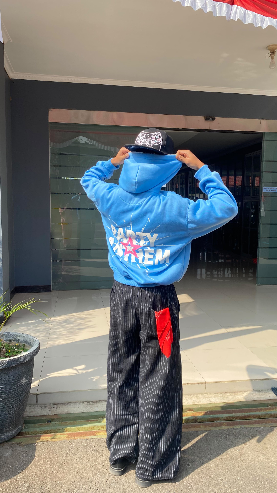

Lulusan SMA berjiwa wirausaha tinggi yang memadukan kedisiplinan, kreativitas bermusik, dan pemikiran strategis untuk membangun masa depan bisnis yang dinamis.

Saya adalah seorang lulusan SMA dengan ambisi besar untuk menjadi seorang Pengusaha (Entrepreneur) terkemuka. Bagi saya, keberhasilan didapat dari kombinasi disiplin, inovasi, serta keberanian mengambil peluang.
Selain dunia bisnis, hobi utama saya adalah bermain gitar. Melalui musik, saya mengasah ketelitian, rasa empati, kreativitas, dan kemampuan fokus tinggi—kualitas penting yang juga sangat berguna dalam mengelola bisnis dan tim di masa depan.
Pengusaha & Bisnis Kreatif
Gitaris & Aransemen Musik
Siap memimpin ide-ide baru dengan visi yang mantap dan aksi nyata.
Menuangkan improvisasi musik ke dalam penyelesaian masalah bisnis.
Pantang menyerah dalam belajar, mencoba, dan terus bertumbuh.
Fondasi Pengetahuan & Karakter
Menyelesaikan pendidikan SMA dengan melatih pola pikir kritis, interaksi sosial, serta keaktifan dalam kegiatan organisasi dan minat bakat seni musik.
Autodidaktik & Pembelajaran Otodidak
Mempelajari dasar-dasar riset pasar, strategi pemasaran digital, literasi keuangan dasar, dan cara membangun model bisnis berskala kecil.
Latihan Konsisten & Kreativitas
Mengasah teknik instrumen gitar secara konsisten, memahami teori musik dasar, dan melatih disiplin diri melalui jam latihan yang teratur.
Rencana dan konsep proyek wirausaha masa depan yang ingin diwujudkan.
Membangun brand produk lokal terpercaya yang memanfaatkan platform digital untuk jangkauan pasar yang luas.
Menggabungkan passion gitar dengan potensi usaha seperti studio musik modern, aksesoris instrumen, atau merchandise.
Menyediakan solusi kreatif berbasis kebutuhan masyarakat modern dengan mengedepankan pelayanan berkualitas tinggi.
Bermain gitar bukan sekadar hobi bagi saya, melainkan tempat mengasah fokus, mengekspresikan emosi, dan melatih ketekunan. Setiap nada mengajarkan harmoni—hal yang sama yang dibutuhkan saat memimpin bisnis.